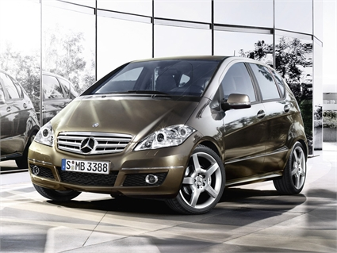
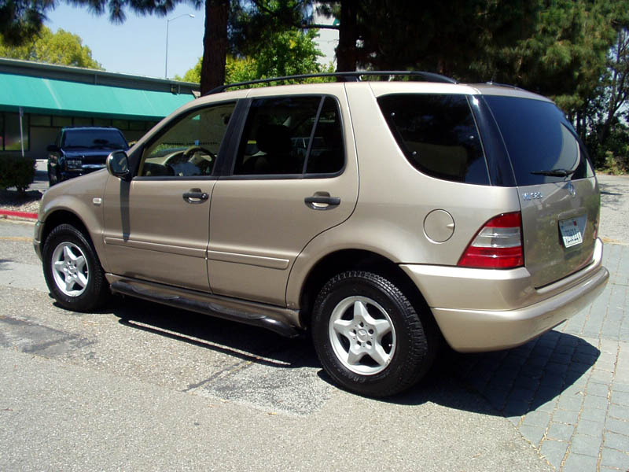

En andrabil

Vi visste från början att vi skulle behöva en andrabil. Vi bor nästan tre mil utanför stan, och vi jobbar båda i princip inne i stan. Den andra bilen skulle senast behövas när våra tvillingar nu 9mån gamla ska börja på dagis i augusti och både jag och frun börjar jobba igen efter föräldraledighet. Jag hade börjat fundera på en mindre andrabil, det räcker med en stor bil, och vi har en E-klass kombi W211, (läs om den och se bilder här,) så jag hade sneglat på både A-klass, B-klass och C-klass. Men efter denna historia förstår ni nog varför jag ändrar mig. Eller skapar ett annat behov…
Det var förr förra veckan när jag började hoppas på att vintern äntligen var över, det hade till och med smält undan lite snö när det kom, natten mellan torsdag och fredag fick vi i vårt villaområde ca 40 cm nysnö. Jag såg till att komma iväg tidigare än vanligt för jag insåg att det gäller att komma iväg innan alla andra för att slippa de värsta köerna. Jag skottade mig fram till bilen, vår E240 T. På vår innergård var det nästan en meter med snö i drivorna. Som tur var hade jag kommit ihåg att sätta i sladden till kupéfläkten, bilen var fri från snö på rutorna runt om. Jag hade planerat att ge upp försöket att ta mig till jobbet denna dag när jag stod mitt på innergården, men jag såg att en granne redan hade åkt på vår lilla väg och jag tänkte att kommer jag bara ut i hans hjulspår så kommer det att ordna sig. En halvtimme senare med hjälp av en granne, hade jag lyckats att ta mig ut till en lite större väg som var plogad, på vägen dit körde jag nog fast säkert 7-10 gånger, vilket innebar att underredet tog i och bilen inte fick tillräckligt grepp, ut och skotta ett par meter bakom bilen och ett par meter framför, backa loss och sedan ta sats och köra järnet framåt så långt det bara gick, som längst kom jag nog ca 150m på ett försök och hade rätt bra fart, men då blev det dags att svänga en skarp högersväng, jag var tvungen att sakta ner plus att alla hjul fick köra i djupsnö i själva svängen, det blev för mycket och det tog stopp, så här höll det på tills jag var ute på den större vägen.
Detta gjorde att jag rejält saknade den BMW X5 vi tidigare haft, (det var på den tiden jag inte hunnit bli Mercedes-frälst ännu).
När jag äntligen kom fram till jobbet var jag tvungen att kolla hur begagnade Mercedes ML låg till i pris, jag blev glatt överraskad när jag märkte att man kunde hitta flera som verkade ok för runt 100 000kr, då med mina egna krav om att de inte ska ha gått över ca 15 000mil, svensksåld, servicebok och någorlunda utrustad, årsmodell från -00 till -02. Jag tror att en ML320 är det som verkar vettigast, en ML230 blir nog alldeles för klent och dieselbilarna har för hög fordonskatt. Förbrukningen är inte jätteviktig då vi inte kommer att köra väldigt mycket med den. Hade jag vågat hade det naturligtvis varit extremt trevligt med en ML55 AMG, då de inte är markant dyrare än de andra motoralternativen, men jag är rädd för att de har fått bekänna färg och spänna alla sina muskler lite för ofta, risken eller sannolikheten att de ska rasa eller gå sönder känns betydligt högre än för de mer sansade motoralternativen, och om det gör det så lär man bli ruinerad.
Samtliga av de tre åren vi bott i huset har det under vintrarna kommit rejält med snö, vilket lett till att de som röjer snön har svårt att bli av med den och att ploga i tid, enligt mig.
Så detta är anledningen till att jag nu så sakta börjat att sondera begagnat marknaden för Mercedes ML.
Jag skriver mer så snart jag har mer att delge er. Tips och råd emottages tacksamt!
2011-02-25
Kommentarer


Tillbaka till artiklar